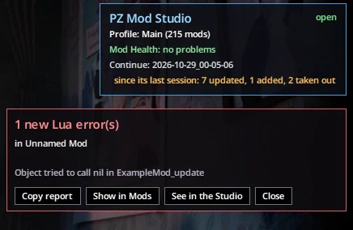
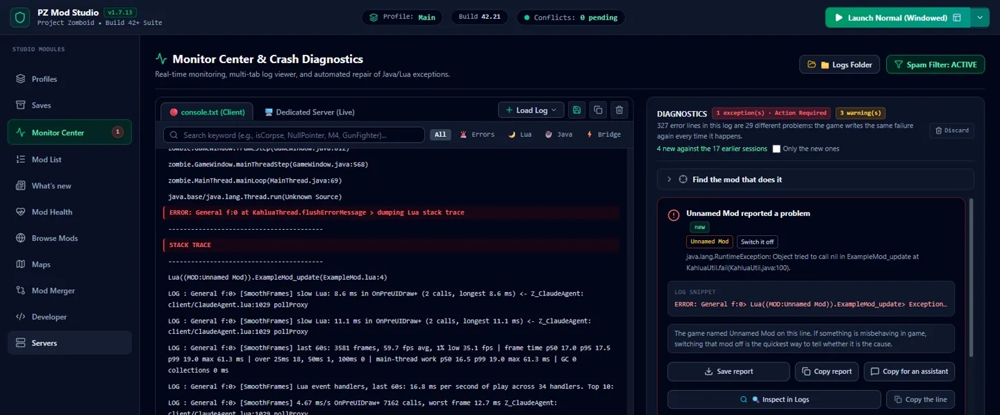
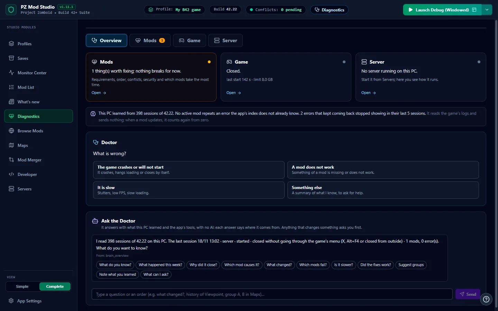
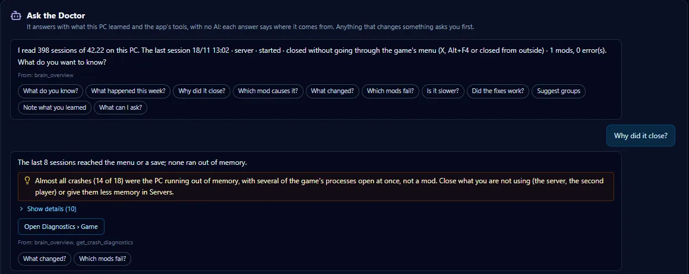
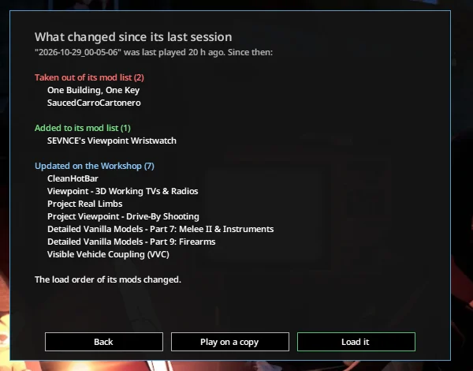
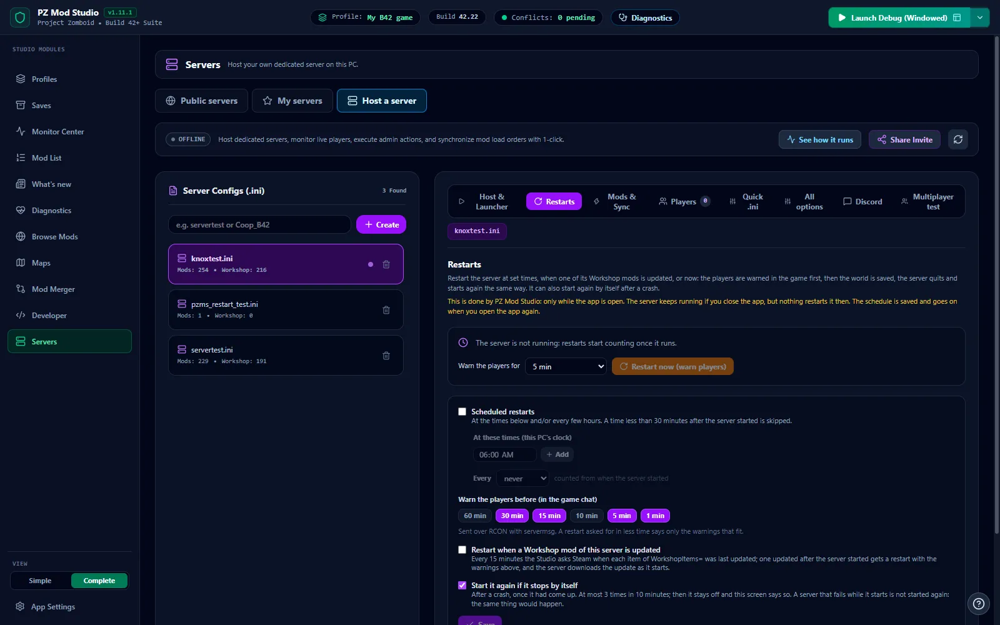
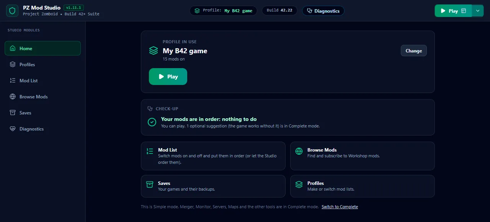

The mod behind every error.
In plain words.
The game's log says something failed. PZ Mod Studio says which mod, what it means and what to do about it.

The game names the mod
The moment a mod's Lua fails, the Link mod says which one, and which mod called it. Copy report puts it on the clipboard for the author.

The app explains it
Monitor Center follows the log as the game writes it and turns each error into a card: the mod behind it, how often it happened, whether the game carried on.

Diagnostics fixes it
Your list is checked with the game's own rules: missing requirements, wrong order, mods your build can't load. Each problem says if you need to act, and has its fix button.
"Why did my
game close?"
Ask it like that. The Doctor answers from what this PC's own game sessions show, with no AI and nothing sent anywhere.
- Which mod goes with the bad sessions: it compares sessions with and without each mod, and says how sure it is.
- What changed when an error began: mods added, updated, moved, or a game update.
- Real crashes told apart from closing the window, and out-of-memory said as such.
- Hunt it by halves when the log names nobody: about 8 launches for a hundred mods.
- Understands questions in all seven languages.

A check before
your save loads.
Loading a save with different mods can lose items, vehicles or whole map areas for good. When a save's mods changed since you last played it, you see what changed first.
- Automatic zip backups when you leave a save and before it loads with changed mods, each one read back after it's written.
- Play on a copy to try the new mods while the original stays as it was.
- A Steam update broke your save? The Studio keeps the version of each Workshop mod you had before, so you can go back to it.

One click from solo
to your co-op list.
Keep a profile for each way you play. Switching one unsubscribes nothing, and with the free Link mod the game's own Mods screen shows the active profile.
- Auto-Sort puts each mod after what it needs, the way the game reads it, says why it moved each one, and leaves the rest where you put it.
- Each profile keeps its own saves, game options, mod settings and memory.
- Change mods in the game and the change goes back to the profile.
Run a server without
babysitting it.
Join a server with exactly its mods, or host your own on this PC.
- Installs the official dedicated server for you, on the branch your game is on.
- Restarts on a schedule, after a crash, or when one of its Workshop mods updates, with warnings in the game chat first.
- Mods & Sync writes your mods into the server's
Mods=,WorkshopItems=andMap=lines. - Players with kick and ban, every server and sandbox option, and Discord notices and commands.

And the rest of
a modded game.
Running in
a minute.
- Download and unzip. Run
Project-Zomboid-Mod-Studio.exe: no installer, no admin rights. On Linux, run the AppImage or install the .deb. - It finds everything. The game, the Workshop and your
Zomboidfolder, on Steam, GOG or a manual install. - Press Play. The Home screen says if anything needs fixing first, with the button for it. Subscribe to the Link mod to see it all in the game too.

Open, local,
and careful.
SHA256SUMS.txt and a signature; the app checks both before it updates itself.FAQ
Is it safe?
The code is open, the app has no account and sends no telemetry, and it never edits your Workshop mods: fixes go into separate folders you can delete. Each release comes with SHA256SUMS.txt and a signature you can check. The Windows build is not code-signed (that needs a paid certificate), so SmartScreen may warn about an app it has not seen often. The Link mod is plain Lua: no Java, no DLLs, nothing compiled.
Does it work with the Steam Workshop? And without Steam?
Yes to both. It reads your Workshop subscriptions, shows what updated and can subscribe through the Steam client. Without Steam (GOG, or mods you put in Zomboid/mods by hand), profiles, load order, error cards and save backups all work; only the Steam parts, like subscribing, need Steam.
Does it run on Linux?
Yes, since version 1.11.0: an AppImage and a .deb, from the same release page. It finds Steam in its usual folders, the Flatpak's included. A few extras are Windows-only: updating the app in place (on Linux it opens the release page), subscribing through the Steam client, downloading SteamCMD for you (install it from your distribution), the Windows out-of-memory log, and capturing the game's window.
Does it help with multiplayer servers?
Both ways. To join: search public servers, see a server's mods and make a profile with exactly them. To host: start a dedicated server from this PC, install the official dedicated server, keep its mod lines in step, restart it on a schedule, after a crash or a mod update, and run it from Discord. Restarts happen while the app is open.
Which languages?
English, Español, Português (Brasil), Français, Deutsch, Русский and 简体中文: the app, its help pages, the Doctor and the Link mod in the game. También en español.
Which game builds?
It is made for Build 42 and follows its updates. Build 41 installs work too; a profile can say which build it is for, and the app asks before launching it on the other one.
Do I need the Link mod?
No, but it puts the app in the game: the profile on the Mods screen, the check before a save loads, the error notice that names the mod. On its own, without the app, the Link still gives you that error notice and a clearer Mods screen.
Does it cost anything?
No. It is free, with no ads and no paid version.
Twelve screens.
One for each part of keeping a modded game running. Open any of them for the full list of what it does, with a screenshot.
Updates.
Latest version: . The app checks for a new version on its own.
Knox County
is waiting.
sudo apt install ./file.debamd64
Link modThe game's side, on the Steam Workshopfree
Every file is on the release page and on itch.io, with SHA256SUMS.txt and its signature. The download also holds the console server for AI assistants (pz-mcp-server), which a player can ignore.